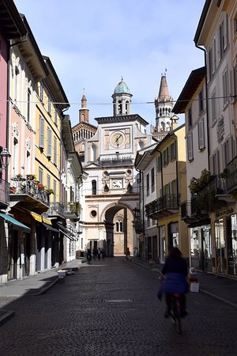
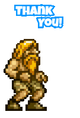

Aperitivo
Nel calice arde un tramonto frizzante, tra note d’agrumi e riflesso brillante. D’intorno riposano bocconi minuti, croccanti, salati, vezzosi tributi. È un piccolo rito di gaudio e colore, che schiude la fame e rallegra il cuore.
prima di andare tutti in guerra, siamo contenti di festeggiare le nostre promesse con voi
Siano è un paese campano ricco di identità, memoria e legami autentici. Inserito nel contesto della Valle dell'Irno e vicino a un territorio storicamente importante tra Agro nocerino, Salerno e l'entroterra, conserva il carattere dei paesi in cui le persone, la piazza, le feste e le storie di famiglia hanno ancora un valore speciale. È il luogo delle radici, dei ricordi condivisi e di quella familiarità che si porta sempre con sé, anche quando si vive altrove.
Scopri le tradizioni di Siano

Crema è una città lombarda dal fascino elegante, cresciuta nel tempo come centro agricolo, commerciale e culturale del territorio cremasco. Le sue origini sono medievali e la sua storia si intreccia con quella dei grandi poteri dell'Italia settentrionale, tra autonomie comunali, dominio veneziano e trasformazioni moderne. Ancora oggi il suo centro storico conserva portici, palazzi, piazze e un'atmosfera accogliente che la rendono un luogo perfetto per incontrarsi e stare insieme.
Ospite

Ospite

Ospite

Ospite

Ospitante

Ospitante

